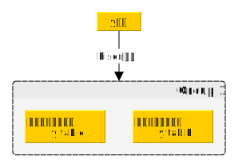

词法分析
词法分析的作用就是从源代码（一堆字符）中切分出一个个单词（常常称为token），并给这些单词标记”词性”。
hexo-inject:begin hexo-inject:end我们使用flex生成词法分析程序。
flex
flex是一个用于生成词法分析器代码的程序：
安装
大部分的包管理器（brew、apt等）应该能方便地装上flex。
Window用户请使用WSL或Cygwin。
flex程序
flex程序由三个部分由%%隔开的部分组成，前两个部分是必须的（但内容可以为空），最后一个部分和前面的%%可以省略：
1 | %{ |
其中第一部分%{ %}中的内容和第三部分基本上会被原封不动地拷贝到生成的词法分析器源文件中，关键在于这个第二部分。
一般来说，这个词法规则是由几行形式如下的文本组成：
1 | 正则表达式 {行为;} |
如：
1 | ([-+])?[0-9]+ {printf("an int!");} |
上面两个就是识别常见 整数 和 浮点数 字面量的词法规则，词法分析器在”看”到这两种词法字面量时就会进行相应的动作：输出"an int!"或"a float!"。
在动作中可以使用yytext，这是一个保存了匹配到的字符串值的char*。
注意我这里只说了我写词法规则的方式（也是最简单的方式），实际上这个词法规则里面可以放很多骚东西，比如说可以用BEGIN开始一个”自定义状态”，还有左/右上下文相关、多文件输入等等，如果有兴趣可以自行参考相关资料。
一个小例子
1 | %{ |
将这段代码文件保存为main.l，然后编译运行：
1 | lex ./main.l && gcc ./lex.yy.c && ./a.out |
向程序中输入一个字符串，会产生对应的输出：
1 | a b c 1.5 2 |
flex的原理
大体上就是用我们输入的正则表达式构造DFA，然后用这个DFA在输入中匹配，并在匹配到时进行对应的行为。
对DFA构造有兴趣的人可以看看我的另一篇文章。
语法分析
语法分析的作用是将词法分析中得到的token组织成特定的结构，方便后续工作。
我们使用bison来进行语法分析工作。
bison
bison是一个用于生成语法分析器代码的程序：

bison程序
bison程序的格式和flex非常相似，也是那三个部分，只是其中：
- 第一部分有些其他的东西
- 第二部分变成了语法规则，故写法有变
第一部分
第一部分多了这些东西：
%token
%token用于声明一种token词性。
如
1 | %token IDENTIFY INT_LITERAL |
就告知bison会有IDENTIFY和INT_LITERAL两种token词性。
%union
%union用于定义语法单元的值的类型。
这个要等到后面说了语法单元的值才能说，暂且按下不表。
%left和%right
显然是用来指定运算符结合性的：
1 | %left '>' '<' LESSEQ GREATEREQ EQUAL NONEQUAL |
同时这里也定义了优先级：越下面的运算符优先级越高，故’*’、’/‘优先级高于’+’、’-‘
第二部分
语法规则的写法如下：
1 | 规约到的语句名称: |
这个还是得靠例子来理解：
1 | expression: |
这个语法规则的意思是：
一个expression语句
- 或者是一个
INT_LITERAL - 或者是两个
expression用+号连起来运算的结果
后面的行为部分中的$$1、$$$等是什么意思呢？
首先要知道bison中的语法单元都是有值的，而其中$$n就代表规则中第n个语法单元的值，$$$则代表这个语句的值。
那么这个值是什么类型呢？
那就要说到上面这个%union、%token等等的知识了。
这个%union就像是一个C语言的union，这个union几乎就是bison中语法单元的值的类型，例如：
1 | %union { |
然后在声明token时可以指定其对应的%union的field，例如：
1 | %token <string_value> IDENTIFY STRING_LITERAL |
并且可以用%type指定各种语句对应的%union的field，如上面的expression：
1 | %type <int_value> expression |
然后只要记得在给$$$$赋值的时候赋的是合适的类型的值即可。
bison的原理
bison会生成基于LALR(1)的parsing table的文法分析器代码。
文法分析相关知识我将会在另外的文章中讲述。
Combine it all together
在flex和bison一起工作时，工作流程大致是这样的：
其中词法分析器使用yylval变量来将token的值返回给语法分析器，而用return直接返回token的词性。
同时bison生成语法分析器的同时也可以生成相应.h文件，供词法分析器使用。
说了那么多还是实操一下来的明白，我们做一个完整的例子，先编写：
1 | %{ |
然后用bison编译：
1 | bison -d ./main.y |
其中-d表示要生成相应的头文件，即main.tab.h。
然后编写相应的词法分析器：
1 | %{ |
注意我们include了语法分析器头文件main.tab.h，这使得我们可以使用INT_LITERAL和DOUBLE_LITERAL等宏。
然后用bison编译：
1 | bison main.y |
然后编译输出的.c文件：
1 | gcc ./*.c # 懒狗就是不愿意打文件名 |
跑跑看：
1 | >> ./a.out |
完美漂亮。
现在你的flex和bison水平已经足够编写一个C编译器了，当然你还需要其他知识，尤其是编译器的后端部分。
参考资料
- 《flex & bison》
- http://dinosaur.compilertools.net